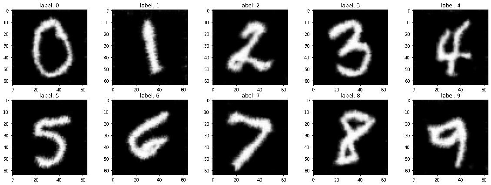
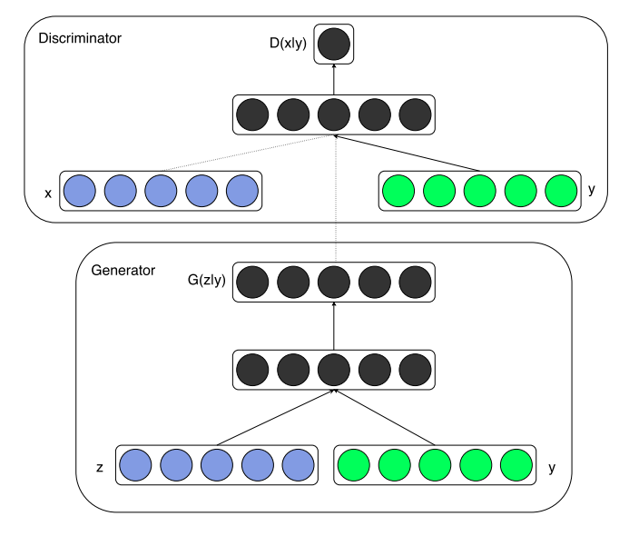
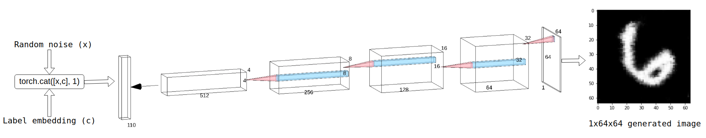
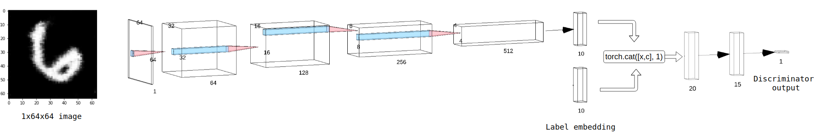
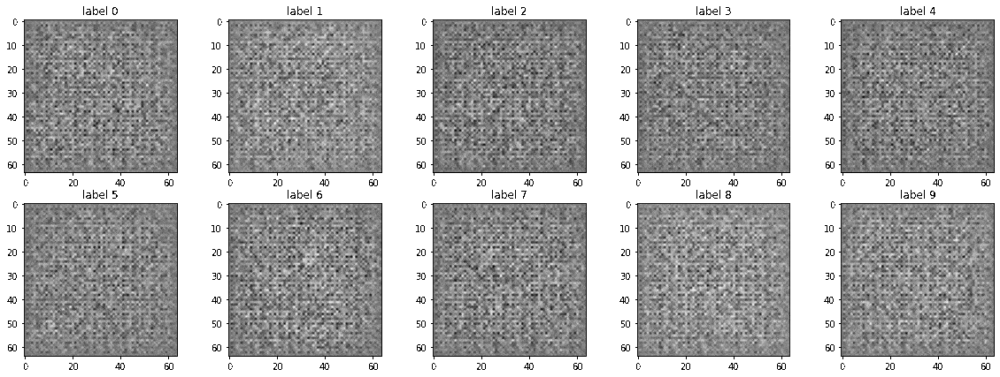
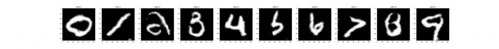
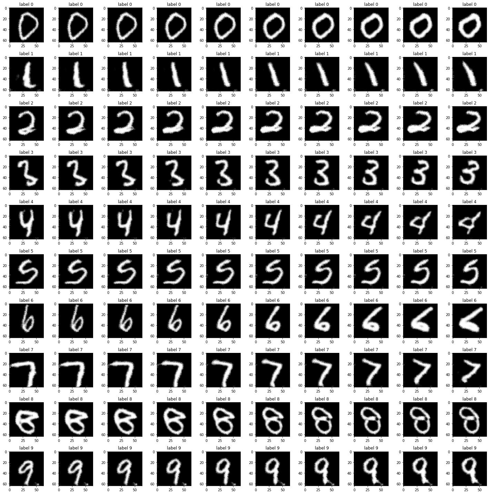

The Next Step - Conditional DCGANs

GANs can generate real-looking samples, but can they be trained to generate conditioned samples? The answer is yes. This blog post documents my learning experience with Conditional GANs and attempts to explain how I was able to generate images of class-specific handwritten digits. The digits you see above are not real, they are generated using a PyTorch based Conditional DCGAN, I've prepared a colab notebook, feel free to check it out by clicking the badge below.

Background :
While I was experimenting with GANs ([read more]()), one question that constanty bugged me was;
Is possible to use GANs to generate class specific samples?
My model was successfully able to generate real looking hand-written digits, but it was generating a random digits. There was no way to 'tell' the generator which digit to generate. None of the neural networks were aware of the existence of classes within the training data.
I googled 'class specific gans' and eventually discovered that these 'class specific gans' do exist and they are called Conditional GANs.
What Exactly is a Conditional GAN ?
The condition in a Conditional GAN is basically the desired class of the generated sample, it is a generative model that allows the generation of targeted data from a given class. Unlike a traditional GAN, it also accounts for the labels while training.
Using the labels:
I was extremely confused on how the labels were to be used. But then I found the following diagram in the Conditional-GAN paper

- x represents real-life data.
- z represents random noise.
- y represents the corresponding label.
- D(x|y) and G(z|y) represent the discriminator net and the generator net respectively.
What I did:
I used Conv layers in both the generator and the discriminator. Here's how I used the labels:
- The Generator: Take a look at the diagram below

I concatenated a random noise vector of length 100 with another vector that represents a label of length 10 and passed the resulting tensor through the generator net. Notice that the input tensor has a length of 110. This input vector is passed through transpose-convolution layers to generate a 1x64x64 image.
- The Discriminator: Take a look at the diagram below

A 1x64x64 image is passed through convolution layers and the resulting tensor of length 10 is concatenated with a label embedding of length 10 and the resulting tensor is passed through the linear layers. Notice that the first linear layer takes an input of length 20. The final output is a tensor of length 1, which represents the probability of the sample being real or fake.
Inference:
I kept an eye on the losses of the models and plotted generated samples after every epoch. After about 7 epochs, the generator was able to generate reasonably good samples. Each frame in the gif below showcases the generators performance through the epochs.

Notice how it starts off with alien looking digits, and keeps improving over time. The only form of augmentation I used is random rotation. I believe using more advanced augmentation techniques will improve the overall performance.
Exploring the Latent Space:
The generator net (here) accepts a latent vector of length 100 and a label embeddding of length 10. While the network trains, it learns to map these latent points to generated images. Every single latent vector is a point in an n-dimensional space where n is the length of the latent vector, which is 100 in this case.
What if you take 2 points in this 100-dimensional space and generate samples by interpolating between them? Every adjacent point leads to the generation of a slightly different image. The following gif showcases generated images with latent vectors interpolated between 2 points, looping back and forth between the 2 extremes.

Notice how each frame is slightly different from the previous. Lets visualize some interpolations side by side, with a different set of interpolated points:

Check out the colab notebook and the Github repository.
A far fetched idea:
One thing that I absolutely despise, is writing assignments on paper and upload scanned copies of it. But given the potential of conditional-GANs, its entirely possible to train one (using the EMNIST alphabet dataset) to generate real-looking handwriting, by iterating through each letter of the doc, determining the class using OCR and stiching the generated images together into a virtual page. If I ever build a project surrounding this idea, I'll name it GAN-writing :)
Credits:
- The Conditional-GAN paper
- For network visualizations - NN-SVG
- For creating gifs - Ezgif